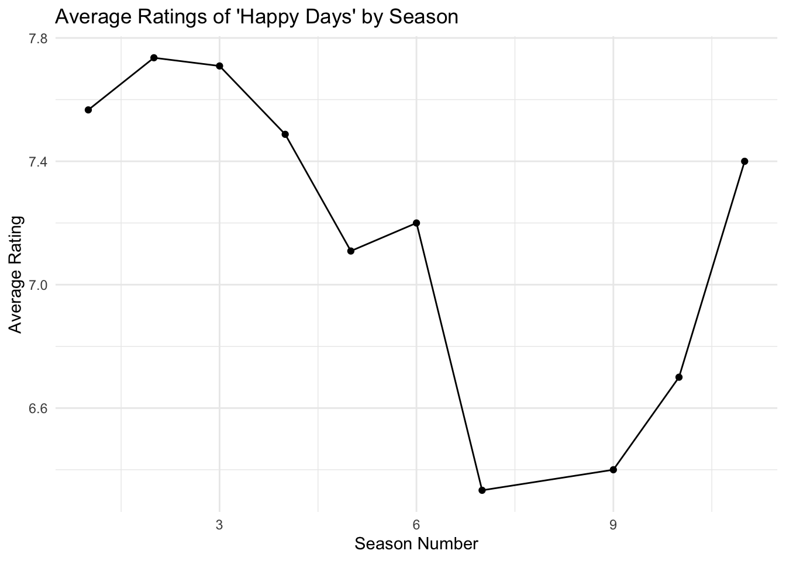

As a society we have been drawn to movies and television since the 1920’s. This report seeks to provide a comprehensive analysis of film using data from IMDb. This report is divided into multiple sections or tasks : first, I will be providing a bunch of fun facts that one may be interested in. Secondly, I created my own custom success metric in order to evaluate movies, actors, and directors. Next, I will use that success metric to display trends in genre popularity. Lastly, (this is the fun part) I will pitch my own remake of a film. I hope you enjoy and be free to guess which film I will remake. Also, please note I have used pre-processed data sets from the course repo which may affect the quality of some answers.
Set Up
library(tidyverse)
── Attaching core tidyverse packages ──────────────────────── tidyverse 2.0.0 ──
✔ dplyr 1.1.4 ✔ readr 2.1.5
✔ forcats 1.0.0 ✔ stringr 1.5.1
✔ ggplot2 3.5.1 ✔ tibble 3.2.1
✔ lubridate 1.9.3 ✔ tidyr 1.3.1
✔ purrr 1.0.2
── Conflicts ────────────────────────────────────────── tidyverse_conflicts() ──
✖ dplyr::filter() masks stats::filter()
✖ dplyr::lag() masks stats::lag()
ℹ Use the conflicted package (<http://conflicted.r-lib.org/>) to force all conflicts to become errors
Rows: 2460608 Columns: 6
── Column specification ────────────────────────────────────────────────────────
Delimiter: ","
chr (6): nconst, primaryName, birthYear, deathYear, primaryProfession, known...
ℹ Use `spec()` to retrieve the full column specification for this data.
ℹ Specify the column types or set `show_col_types = FALSE` to quiet this message.
Warning: One or more parsing issues, call `problems()` on your data frame for details,
e.g.:
dat <- vroom(...)
problems(dat)
Rows: 372198 Columns: 9
── Column specification ────────────────────────────────────────────────────────
Delimiter: ","
chr (7): tconst, titleType, primaryTitle, originalTitle, endYear, runtimeMin...
dbl (2): isAdult, startYear
ℹ Use `spec()` to retrieve the full column specification for this data.
ℹ Specify the column types or set `show_col_types = FALSE` to quiet this message.
Rows: 3007178 Columns: 4
── Column specification ────────────────────────────────────────────────────────
Delimiter: ","
chr (4): tconst, parentTconst, seasonNumber, episodeNumber
ℹ Use `spec()` to retrieve the full column specification for this data.
ℹ Specify the column types or set `show_col_types = FALSE` to quiet this message.
Rows: 372198 Columns: 3
── Column specification ────────────────────────────────────────────────────────
Delimiter: ","
chr (1): tconst
dbl (2): averageRating, numVotes
ℹ Use `spec()` to retrieve the full column specification for this data.
ℹ Specify the column types or set `show_col_types = FALSE` to quiet this message.
TITLE_CREW <-get_imdb_file("title_crew_small")
Rows: 371902 Columns: 3
── Column specification ────────────────────────────────────────────────────────
Delimiter: ","
chr (3): tconst, directors, writers
ℹ Use `spec()` to retrieve the full column specification for this data.
ℹ Specify the column types or set `show_col_types = FALSE` to quiet this message.
Rows: 6586689 Columns: 6
── Column specification ────────────────────────────────────────────────────────
Delimiter: ","
chr (5): tconst, nconst, category, job, characters
dbl (1): ordering
ℹ Use `spec()` to retrieve the full column specification for this data.
ℹ Specify the column types or set `show_col_types = FALSE` to quiet this message.
#ensuring characters are numericalNAME_BASICS <- NAME_BASICS |>mutate(birthYear =as.numeric(birthYear),deathYear =as.numeric(deathYear))
Warning: There were 2 warnings in `mutate()`.
The first warning was:
ℹ In argument: `birthYear = as.numeric(birthYear)`.
Caused by warning:
! NAs introduced by coercion
ℹ Run `dplyr::last_dplyr_warnings()` to see the 1 remaining warning.
#TASK 1 Correct the column types of the TITLE tables using a combination of #mutate and the coercion functions as.numeric and as.logical.TITLE_BASICS <- TITLE_BASICS |>mutate(startYear =as.numeric(startYear),endYear =as.numeric(endYear),runtimeMinutes =as.numeric(runtimeMinutes) )
Warning: There were 2 warnings in `mutate()`.
The first warning was:
ℹ In argument: `endYear = as.numeric(endYear)`.
Caused by warning:
! NAs introduced by coercion
ℹ Run `dplyr::last_dplyr_warnings()` to see the 1 remaining warning.
Warning: There were 2 warnings in `mutate()`.
The first warning was:
ℹ In argument: `seasonNumber = as.numeric(seasonNumber)`.
Caused by warning:
! NAs introduced by coercion
ℹ Run `dplyr::last_dplyr_warnings()` to see the 1 remaining warning.
nconst primaryName birthYear deathYear primaryProfession
1 nm5671597 Robert De Visée 1655 NA composer,soundtrack
knownForTitles
1 tt2219674,tt1743724,tt0441074,tt14426058
Now this question was tricky and did require a google search. IMDb unfortunately has not reported the deaths of multiple people such as Zohrabai Ambalawali, Nemesio Antúnez, Mario Maffei , Mario Bertolazzi. Initially, my first answer was a man named Robert de Visee who had a birth year of 1600? That made absolutely no sense so I filtered more and researched through google and found out that Elisabeth Waldo is reported to be the oldest living actor at 105 years old.
3. There is one TV Episode in this data set with a perfect 10/10 rating and at least 200,000 IMDb ratings. What is it? What series does it belong to?
primaryTitle
1 Star Wars: Episode IV - A New Hope
2 Star Wars: Episode V - The Empire Strikes Back
3 Star Wars: Episode VI - Return of the Jedi
4 Star Wars: Episode VIII - The Last Jedi
This is honestly something I knew beforehand as a major Star Wars fan. Mark Hamil played Luke Skywalker in the original trilogy and reprised his role in The Last Jedi. Fun fact: He is also known for voicing the Joker in Batman: The Animated Series.
5. What TV series, with more than 12 episodes, has the highest average rating?
This is interesting because I thought it would be Breaking Bad or Game of Thrones, or The Sopranos. However, the highest rated show with more than 12 episodes is Craft Games, a show about MineCraft. It has a series rating of 9.7 while Breaking bad has a series rating of 9.5.
6. Is it true that episodes from later seasons of Happy Days have lower average ratings than the early seasons?
happy_days_tconst <- TITLE_BASICS |>filter(titleType =="tvSeries"& primaryTitle =="Happy Days") |>pull(tconst)happy_days_episodes <- TITLE_EPISODES |>filter(parentTconst == happy_days_tconst)happy_days_ratings <- happy_days_episodes |>inner_join(TITLE_RATINGS, by ="tconst")# Average ratings significantly dipped post season 6, # however it took almost three seasons to reach above an average rating of 7.0average_ratings_by_season <- happy_days_ratings |>group_by(seasonNumber) |>summarise(AverageRating =mean(averageRating, na.rm =TRUE), .groups ="drop") |>arrange(seasonNumber) ggplot(average_ratings_by_season, aes(x =as.numeric(seasonNumber), y = AverageRating)) +geom_line(group =1) +geom_point() +theme_minimal() +labs(title ="Average Ratings of 'Happy Days' by Season",x ="Season Number",y ="Average Rating")

I guess the saying is true then. Happy Days suffered a massive drop in ratings post season 6. It took the show almost three seasons to regain an average rating of 7.0.
Task 3: Custom Success Metric: this is my specific way of measuring the success of a show or film
1. Choose the top 5-10 movies on your metric and confirm that they were indeed box office successes.
This is my metric of success. It involves two components : the average rating and the number of votes. The average rating has a higher weight in the formula at 0.7 because I value the quality of a title more then the audience engagement. This success metric will be very important to the rest of the analysis.
2. Choose the top 5-10 movies on your metric and confirm that they were indeed box office successes.
tconst primaryTitle SuccessMetric
1 tt0111161 The Shawshank Redemption 10.97846
2 tt0068646 The Godfather 10.80018
3 tt0468569 The Dark Knight 10.76643
4 tt0167260 The Lord of the Rings: The Return of the King 10.65466
5 tt0110912 Pulp Fiction 10.61927
6 tt1375666 Inception 10.59079
7 tt0120737 The Lord of the Rings: The Fellowship of the Ring 10.58901
8 tt0137523 Fight Club 10.56412
9 tt0108052 Schindler's List 10.56143
10 tt0109830 Forrest Gump 10.55474
This code will provide you with some of the greatest movies which you should watch. Also, it helps to validate my success metric. Note: The focus for the rest of the report will be about movies.
4. Choose 3-5 movies with large numbers of IMDb votes that score poorly on your success metric and confirm that they are indeed of low quality.
This is another validity check. These are all terrible movies.
4. Choose a prestige actor or director and confirm that they have many projects with high scores on your success metric.
#Lets see if Christopher Nolan has successful moviesnolan_nconst <- NAME_BASICS |>filter(primaryName =="Christopher Nolan") |>pull(nconst)nolan_titles <- TITLE_CREW |>filter(directors %in% nolan_nconst | writers %in% nolan_nconst) |>select(tconst)nolan_projects_with_ratings <- nolan_titles |>inner_join(TITLE_BASICS, by ="tconst") |>filter(titleType =="movie") |>inner_join(TITLE_RATINGS, by ="tconst") |>arrange(desc(SuccessMetric))top_nolan_projects <- nolan_projects_with_ratings |>filter(SuccessMetric >7) print(top_nolan_projects)
tconst titleType primaryTitle originalTitle isAdult
1 tt0468569 movie The Dark Knight The Dark Knight 0
2 tt1375666 movie Inception Inception 0
3 tt0816692 movie Interstellar Interstellar 0
4 tt1345836 movie The Dark Knight Rises The Dark Knight Rises 0
5 tt0482571 movie The Prestige The Prestige 0
6 tt0209144 movie Memento Memento 0
7 tt0372784 movie Batman Begins Batman Begins 0
8 tt15398776 movie Oppenheimer Oppenheimer 0
9 tt5013056 movie Dunkirk Dunkirk 0
10 tt6723592 movie Tenet Tenet 0
11 tt0278504 movie Insomnia Insomnia 0
12 tt0154506 movie Following Following 0
startYear endYear runtimeMinutes genres averageRating
1 2008 NA 152 Action,Crime,Drama 9.0
2 2010 NA 148 Action,Adventure,Sci-Fi 8.8
3 2014 NA 169 Adventure,Drama,Sci-Fi 8.7
4 2012 NA 164 Action,Drama,Thriller 8.4
5 2006 NA 130 Drama,Mystery,Sci-Fi 8.5
6 2000 NA 113 Mystery,Thriller 8.4
7 2005 NA 140 Action,Crime,Drama 8.2
8 2023 NA 180 Biography,Drama,History 8.3
9 2017 NA 106 Action,Drama,History 7.8
10 2020 NA 150 Action,Sci-Fi,Thriller 7.3
11 2002 NA 118 Drama,Mystery,Thriller 7.2
12 1998 NA 69 Crime,Mystery,Thriller 7.4
numVotes SuccessMetric
1 2922922 10.766428
2 2595555 10.590793
3 2161548 10.465901
4 1857156 10.210367
5 1466970 10.209613
6 1342361 10.112982
7 1603362 10.026284
8 797550 9.886790
9 752538 9.519362
10 606902 9.104837
11 323258 8.845863
12 103363 8.643804
Nolan does have multiple successful movies such as : Inception, The Dark Knight, Interstellar. Note that a successful movie will have a success metric of at least 7 or higher.
Task 4: Trends in Success Over Time: Identifying a Genre
1. What was the genre with the most “successes” in each decade?
TITLE_BASICS <- TITLE_BASICS |>mutate(startYear =as.numeric(startYear)) |>filter(startYear >=1920, startYear <=2020)title_data <- TITLE_BASICS |>inner_join(TITLE_RATINGS, by ="tconst") |>mutate(Decade =floor(startYear /10) *10) genre_successes_per_decade <- title_data |>filter(SuccessMetric >7) |>separate_rows(genres, sep =",") |>group_by(Decade, genres) |>summarise(SuccessCount =n(), .groups ="drop") |>arrange(Decade, desc(SuccessCount))top_genre_per_decade <- genre_successes_per_decade |>group_by(Decade) |>slice_max(order_by = SuccessCount, n =1, with_ties =FALSE)ggplot(top_genre_per_decade, aes(x =as.factor(Decade), y = SuccessCount, fill = genres)) +geom_col(show.legend =TRUE) +labs(title ="Top Genre by Decade Based on Success Metric (1920-2020)",x ="Decade",y ="Number of Successful Titles",fill ="Genre")
print(top_genre_per_decade)
# A tibble: 11 × 3
# Groups: Decade [11]
Decade genres SuccessCount
<dbl> <chr> <int>
1 1920 Drama 118
2 1930 Drama 302
3 1940 Drama 465
4 1950 Drama 961
5 1960 Drama 1815
6 1970 Drama 2641
7 1980 Drama 2898
8 1990 Comedy 5706
9 2000 Drama 14017
10 2010 Drama 32084
11 2020 Drama 3306
The drama category has been consistently reliable and has produced the most hits out of any genre. This may be due to unreliable grouping by IDMb, which causes many movies to have two or more genres; one of which is typically “drama”. Nonetheless, dramas have been the most popular and successful form of film throughout the decades.
4.What genre has become more popular in recent years?
genre_trends <- TITLE_BASICS |>inner_join(TITLE_RATINGS, by ="tconst") |>mutate(Decade =floor(startYear /10) *10) |>filter(Decade >=1980, Decade <=2020) |>separate_rows(genres, sep =",") genre_popularity <- genre_trends |>filter(SuccessMetric >7) |>group_by(Decade, genres) |>summarise(SuccessCount =n(), .groups ="drop") |>arrange(genres, Decade)ggplot(genre_popularity, aes(x =as.factor(Decade), y = SuccessCount, group = genres, color = genres)) +geom_line() +geom_point() +theme_minimal() +labs(title ="Trends in Genre Popularity (1980-2020)",x ="Decade",y ="Number of Successful Titles",color ="Genre")
Now, this is also interesting. This graph shows the rise of many genres from 1980 to 2020 and recently it has been shown that crime movies have been on the rise. I believe people tend to like crime dramas.
No surprise here, Taxi Driver has a great success metric at 9.8. It seems to be viable to make a Taxi Driver reboot.
Task 6: Key Personnel : Lets start building the cast for our movie.
My plan is to have Christopher Nolan directing, with Martin Scorcese as an advisor. I would like Robert Pattinson to play the modern lead of Travis Bickle. Bella Ramsey to play modern Iris and Maude Apatow to play modern day Betsy. Lastly modern Charles Palantine will be played by Jon Hamm. Also a cameo of old Travis Bickle By De Niro is the cherry on top.
Initial Pitch.
Hello, this is my pitch of a modern retelling of Taxi Driver. Taxi Driver is considered to be one fo the best movies of all time and it is backed by its high success metric of 9.8. I envision a modern retelling of Taxi Driver where a new main character (Patttinson) is an UBER driver in NYC who has idolized Travis Bickle and wishes to follow in his footsteps. Over time due to the mundane nature of his career, and feeling of inadequacy he progessively become more neurotic and delves deeper into fanaticism.
Crime Dramas have become a trend since 2000 and while it may be oversaturated this is a great way to shake things up in this political climate. Having the new Travis actually shoot and assassinate a political figure (Hamm) would be a horrifying and wonderful thing to watch. More importantly though political violence grabs attention. Also, having him play vigilante and save a child prostitute (Ramsey) would help to humanize a neurotic man. With Nolan at the helm who has worked on the wildly successful The Dark Knight and Martin Scorcese playing advisor, there is no doubt that this will be a great movie.